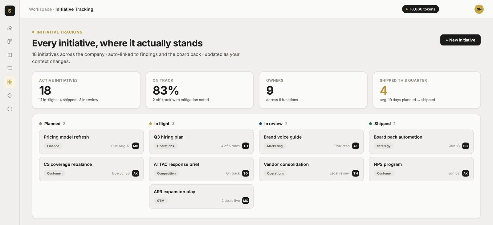

What changes after the first step.
Six modules. One job: make the company’s judgment usable before you ask AI to act on it.
Know your business.
Business Brain gives you the version of the firm people actually operate, not the thin version that fits in a spreadsheet.
Business Intake gives your firm a disciplined way to gather what it already knows across six areas.
The exceptions, ownership, and reasoning leave private memory and become something the next person can actually use.
Business Brain holds the language you read, correct, and approve before it becomes the company version.

“This is step one. You don’t have to like it, but it’s not going to change.”
Know your market.
Competition Hub shows what a competitor move means in the context of the position your firm has actually taken.
It brings a competitor move to the surface when it could change a decision you are already carrying.
It keeps your approved position in the frame, so you do not overreact to noise or miss a real threat.

Competition Hub: market movement read against the firm you actually are.
“If your competitors had this, what would you do?”
Know what to do next.
Strategic Insights finds the questions hiding in your approved record. Strategic Initiatives turns the ones you choose into a ranked decision list. Findings from the record, ranked initiatives, and you decide what moves.

Strategic Insights: the part of the record that deserves a harder look, with its source attached.

Strategic Initiatives: the next decisions, ranked by what your company record says matters.
Keep it yours.
Work Streams keep repeatable work connected to the operating record your firm approved, instead of scattered across personal prompts and private memory.

Team workspace: people work from the company record, not their own private version of it.
Work Streams keep repeatable work tied to the confirmed record, with the output retained by the company.
Work Streams: repeatable work that begins with the record you approved.
Your business doesn’t belong in a chatbot.
It belongs in Business Brain, your company’s own operating record. You approve every line. The point is not to hand your thinking to a chatbot. The point is to stop losing it.
All four, on every plan.
Business Brain, Business Intake, Strategic Initiatives, Strategic Insights, Competition Hub, and Work Streams are part of the one product. $399 per month includes 5 seats.